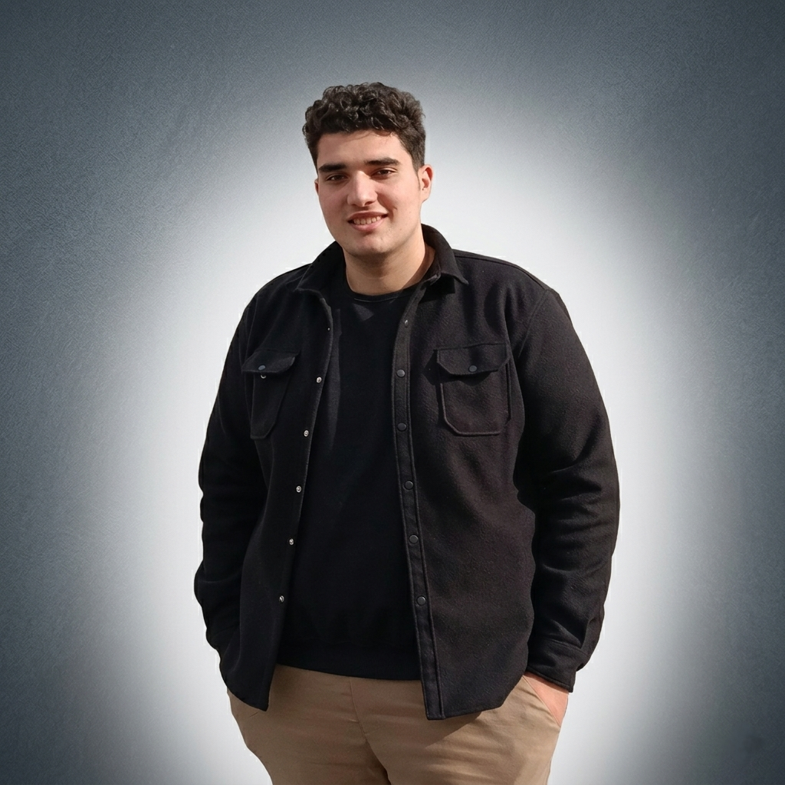

LET’S CONNECT
Ahmed Saber
Nabhan
IT Student · Computer Networks
Find me & say hello
A little about me
I am an IT student in the Faculty of Computers and Artificial Intelligence at Damietta University. I am interested in computer networks, and I study them, keep learning about them, and put what I learn into practice through hands-on work. I am focused on gaining knowledge and practical experience in networking.